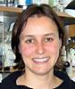

News Archives : 2006 : 2006 Merck Awards for Genome-Related Research Announced
by Jim Henle
March 20, 2006
The 2006 Merck Genome-Related Research Awards were announced on February 27. This year, Merck generously agreed to fund two additional postdoctoral fellows, for a total of four postdoctoral awards, in addition to four awards for Faculty of Arts and Sciences (FAS) members. Now in its fourth year, the awards are made possible by a five-year gift from Merck through MCB to support genomics research in FAS. Postdoctoral fellowships are valued at $50,000 each while one-year faculty pilot project awards are valued at $20,000 each.
Again this year, the Merck Awards are facilitating novel approaches to the use of genomics in pursuit of larger biological questions. The awarding committee, composed of scientists from Merck and from FAS and Harvard Medical School faculty, has been open to a wide range of studies and especially attuned to the potential of pioneering cross-field endeavors. This year’s awardees run the gamut from research on psychiatric disorders to molecular studies of protein interactions.
The awards are also notable for their commitment to basic research. Even the more medically oriented projects contain basic science components, whether in terms of new methodologies proposed or the broader implications of the research endeavors.
As MCB Chair Andrew Murray says, "Merck’s gift allows us to support research in genomics and biology as interpreted in the broadest sense. These awards encourage innovation in interesting but otherwise unfundable ideas in academia." A survey of the 2006 awardees only confirms that appreciation.
Summaries of the Awardees’ Research
Craig Ellermeier is a postdoctoral fellow in the laboratory of Rich Losick, Harvard College Professor and Maria Moors Cabot Professor of Biology in MCB. Dr. Ellermeier was awarded a fellowship for his research on bacterial response to antimicrobial peptides, which are important components of the innate immune system marshaled against pathogenic infections. The resistance to these peptides is an important factor in bacterial virulence. In previous research, Dr. Ellermeier uncovered a crucial protein in Bacillus subtilis that protects against antimicrobial peptides by activating a transcription factor. He has since turned his research eye toward group B streptococci (GBS), having found orthologs of his newly discovered protein as well as the transcription factor in this pathogenic group of bacteria. GBS, as Dr. Ellermeier notes, "are a leading cause of invasive neonatal infections, including pneumonia, septicemia, and meningitis." The fellowship award will fund research using both targeted approaches and microarray experiments to uncover the response to the antimicrobial peptides in this medically important group of organisms.
A second postdoctoral fellowship was awarded to a researcher of the immune system, Stefanie Schalm, who is investigating the role of alternative splicing in the innate immune response. Her research, in the lab of Tom Maniatis, Thomas H. Lee Professor of Molecular and Cellular Biology, in MCB, represents a novel approach; most studies of the immune response focus on transcriptional regulation of signaling cascades, how a series of responses by the immune system is turned on or off. Dr. Schalm is focusing on a different aspect of the response, alternative pre-mRNA splicing. The immune system response orchestrates the creation of whole complexes of antimicrobial proteins. Recent studies have identified a kind of "pattern recognition" at play: pathogen-associated molecular patterns (PAMPs) are recognized and specific arrays of proteins are fashioned in response. Ac tivation of these proteins leads to alternative splicing of pre-mRNAs that generates proteins with diverse and even antagonistic function. A variety of means such as intron retention and different exon usage are employed in the process of alternative splicing of these pre-RNAs. The splicing mechanism is common; in fact a majority of human genes employ it. Yet there has not been a study of its role in the innate immune response. Dr. Schalm’s award will permit her to investigate how PAMPs provoke alternative site splicing, and to characterize alternative pre-RNAs and the alterations in the subsequently encoded proteins.
In-Jung Kim is a postdoctoral fellow in the laboratory of Josh Sanes, Professor of Molecular and Cellular Biology in MCB. Dr. Kim was awarded a fellowship to pursue groundbreaking work on neural specificity, the process by which neurons choose synaptic partners to form stable connections. The resulting circuits underlie nervous system activity, enabling even higher-order perceptions and behavior. Dr. Kim’s research has focused on the mouse retina, a system that is notable for its structure into distinct lamina, or layers. In particular, two kinds of retinal ganglion cells (RGCs), ON, which fire when light intensity increases, and OFF, triggered by resumption of darkness, branch into separate sublayers of a retinal lamina. Dr. Kim is pursuing examination of the genes governing the specificity of this layering. But even the first steps of this research have been difficult because there have been no known molecular markers of ON or OFF RGCs. Through a series of investigations, including microarrays and genomic searches, Dr. Kim has discovered a marker for OFF RGCs in mammals. Moreover, this marker has surprising properties, being a member of a family of proteins that had been discovered in inflammation research, but had not previously been implicated in neuronal processes. Also, the newly discovered cell type is a subset of OFF RGCs that point in the same direction; this directionality is a first for mammal cells. From here, with the aid of the fellowship, Dr. Kim plans to pursue this OFF marker further, and to seek an ON marker, thereby setting up a working system for exploration of neural lamination.
Shovan Ashraf, of the laboratory of Samuel Kunes, Professor of Molecular and Cellular Biology in MCB, is researching the molecular basis of memory. Protein synthesis is known to be a requirement for long-term memory, and remarkably, Dr. Ashraf has developed a system to observe memory-associated synthesis in Drosophila brains during the formation of associative memories of odor or shock. From these studies, he has observed a biochemical mechanism that regulates protein synthesis localized to the synapse. On the cell level, memory requires the structuring of synaptic connections, so this is a mechanism of great interest. Dr. Ashraf has found that Armitage, a component of the RNA interference pathway (RNAi), is localized to synapses and is degraded, releasing local mRNAs as a stable memory is formed. He has been awarded a postdoctoral fellowship for a project to develop a cell culture model to pursue the study of this mechanism and for ensuing genomic studies of components that will elucidate specific features of its pathways.
One-year pilot research projects were awarded to four faculty members.
Rachelle Gaudet, Assistant Professor in MCB, has been awarded a pilot project grant to study transient receptor potential (TRP) channels, ion channels important in a variety of biological processes. Dr. Gaudet has focused on a TRP subfamily, the mammalian TRPVs, which play a role in sensory and pain perception and calcium homeostasis. More specifically, she studies structures found in TRPVs known as ankyrin repeats. These are sequence motifs implicated in the assembly of ion channels and often involved in protein-protein interactions. Dr. Gaudet has already determined the crystal structure of the ankyrin repeat domain (ARD) of the rat TRPV1 and TRAPV2 ion channels. The questions now confronting the research are: What are the protein partners of the ARDs? Are ARDs directly engaged in assembly of the ion channels or are they interacting with regulatory factors? The pilot project will fund a variety of approaches, combining genetic, genomic, biochemical, and structural studies that may not only elucidate the specific interactions of TRPV1-ARD and TRPV2-ARD but also, as a pilot project, provide methods for investigation of other ARD-interacting proteins and TRP channels.
Peter Girguis, Assistant Professor of Biology in the Department of Organismal and Evolutionary Biology, is a second faculty pilot project awardee. Dr. Girguis is engaged in a project concerning the development of microbial fuel cells (MFCs), devices that set microbes to work by harnessing their metabolic processes in energy production. Under proper conditions, certain bacteria such as Geobacter metallireducans transfer their electrons to a MFC's electrode instead of a characteristic electron acceptor such as oxygen. Typically, MFC experiments have focused on stimulating power production by enhancing the rate of electron transfer via embedded electron mediators, or using pure bacterial cultures. Dr. Girguis, however, along with a colleague (Dr. Clare Reimers of Oregon State University), deployed an MFC in coastal marine sediments, producing energy in a natural environment without substrate supplementation. In this setting, the MFC isolated uncultivated microbial strains that were efficacious in energy generation. Since the relevant capacities of most microorganisms are poorly understood, the MFC offered a unique harvesting point for promising organisms. The funded pilot project will enable the construction of genomic libraries from MFC samples. The goal is to employ community genomic analyses combining phylogenetic patterns with functional gene indicators, to reveal key metabolic pathways of these uncultivated groups. It is to be hoped that the efficiency of energy production can ultimately be increased to the point of using MFCs as alternative power sources in some settings.
Gavin MacBeath, Assistant Professor in the Department of Chemistry and Chemical Biology, is a third faculty recipient. Dr. MacBeath’s pilot research project is concerned with the dynamics of tyrosine phosphorylation, one of the more intractable problems of mammalian cell biology. Extracellular stimuli activate cellular receptor tyrosine kinases (RTKs) that recruit signaling proteins, an early step in cell response. But the highly dynamic nature of these responses has made their study formidable: some interactions regulated by tyrosine phosphorylation last only seconds, limiting the use of such methods as immunoprecipitation. Dr. MacBeath has used microarray technology to describe quantitatively a protein interaction network for human ErbB receptors. This has allowed study of the differences in protein recruitment and the various proteins’ affinity for peptides that correspond to sites of phosphorylation on RTKs. Initially, sites have been identified from the primary literature, but this is far from comprehensive. In the pilot project, sites are to be identified using techniques of mass spectrometry. Then, mass spectrometry can also be used to elucidate the complex temporal dynamics of phosphorylation at these sites, dynamics that can vary according to ambient conditions. Studies are also to be performed in cancer cells, which will give an indication of the response differences between normal and cancer cells and may point to reasons some cancers prove less responsive to pharmacological intervention.
The fourth pilot project belongs to Diego Pizzagalli, Assistant Professor in the Department of Psychology. Dr. Pizzagalli’s project seeks to combine genetic analysis with functional magnetic resonance imaging (fMRI) to investigate how allelic variation relates to brain circuitry associated with sensitivity to stress-related psychopathology, specifically depression. This research is motivated by epidemiological studies that have emphasized the role of stress in the emergence and maintenance of depression and the role of genetics in increasing vulnerability to this debilitating disorder. Although the neurobiological mechanisms involved in this gene-environment interaction are not clear in humans, one suggestion is that genetic variation may be a factor in modulating the effects of stress on brain regions implicated in depression. As an initial step toward a better understanding of these processes, Dr. Pizzagalli proposes to collect DNA samples from 70 psychiatrically healthy community subjects. Prior work has associated a common regulatory variant (5-HTTLPR, also known as the "short allele") in the human serotonin transporter gene (SLC6A4) with vulnerability to affective disorders, particularly in interaction with stress. As a result, Dr. Pizzagalli hypothesizes that, compared to subjects carrying allelic variations associated with resilience to psychopathology ("long/long allele carriers"), subjects carrying allelic variations associated with increased vulnerability to affective disorders ("short allele carriers") will show increased activation in brain regions involved in stress responses (e.g., amygdala) and decreased activation in brain regions implicated in stress regulation (e.g., anterior cingulate cortex, medial prefrontal cortex). By integrating molecular genetics and neuroimaging, this project crosses traditional boundaries of neuroscience research and promises to unravel important clues about the neurobiological substrates underlying increased genetic vulnerability to depression.
| Postdoctoral Awards The one-year fellowships provide support to each postdoctoral fellow with more than two but less than five years of postdoctoral experience. Especially encouraged to apply are those whose work is interdisciplinary in the sense that their intellectual activities extend beyond their own laboratory. This year’s awardees are:
Faculty Awards
|